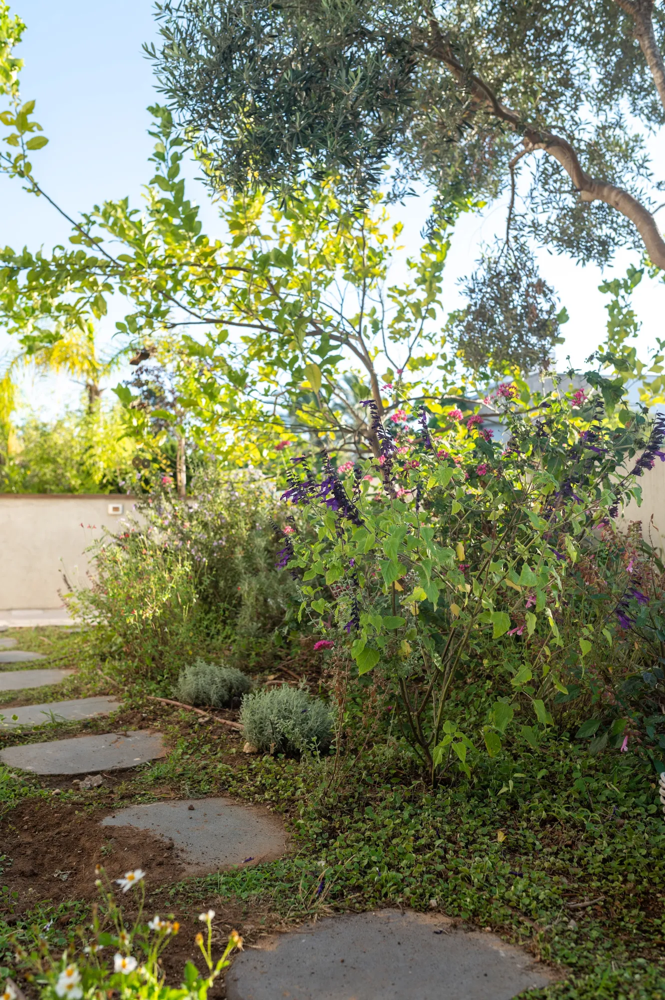
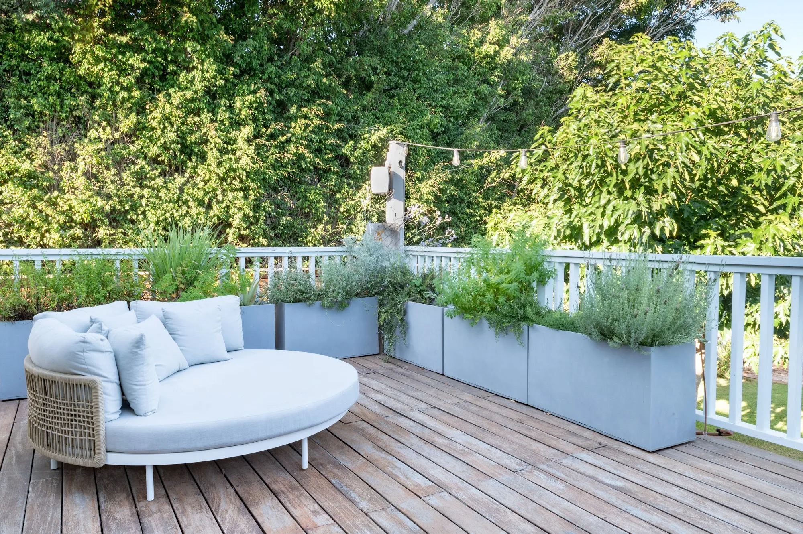
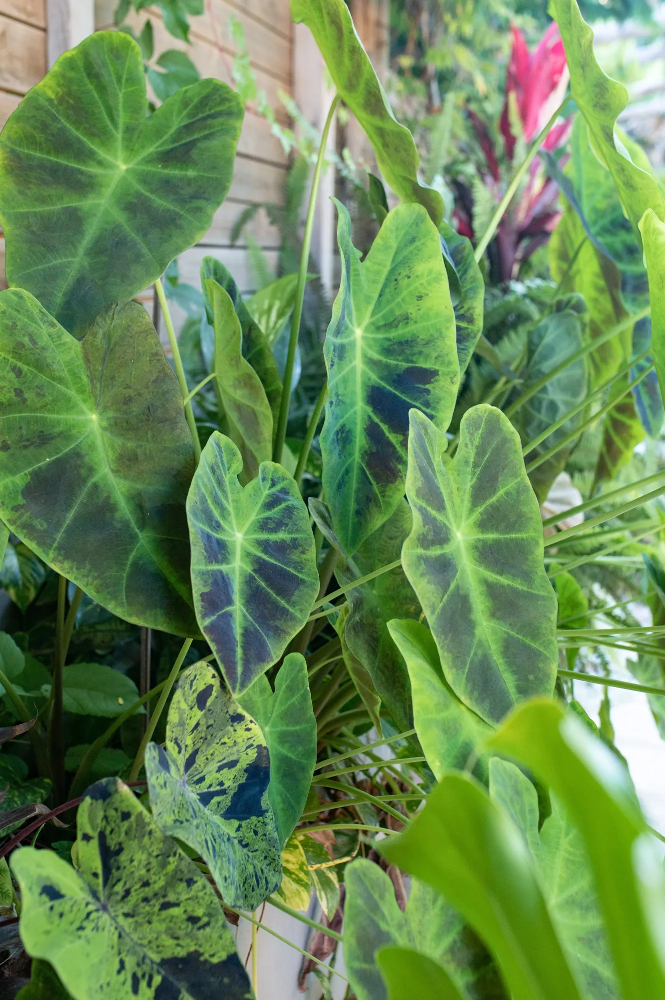
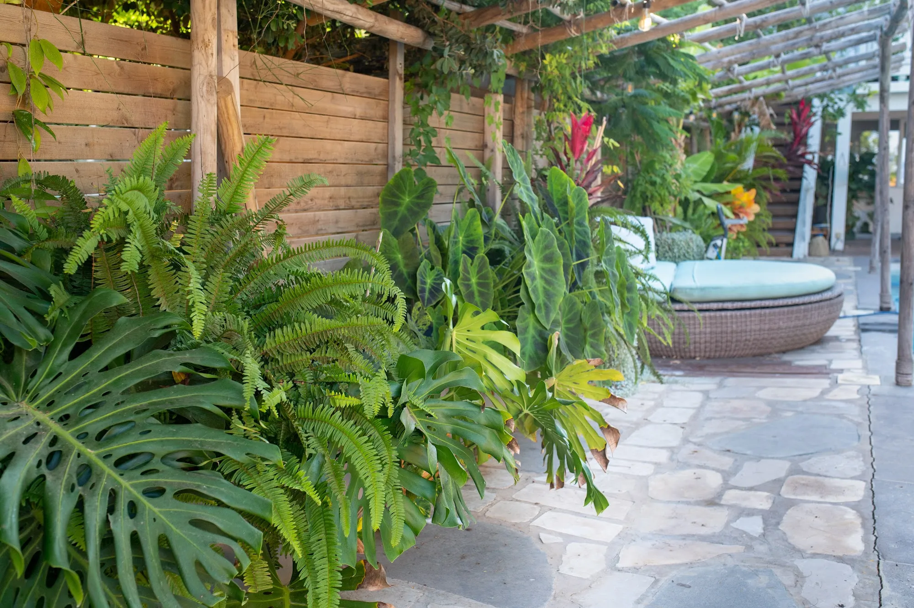

קיסריה · שיקום גינה שלמה
מגינת ירק לגינה שלמה
יפתח רצה להפתיע את מיקה לכבוד יום הולדתה בהקמת גינת ירק קטנה בפתח הבית. כשהגעתי לפגישה איתם להבין את הצרכים ולהכיר את הפוטנציאל בשטח מצאתי משפחה מקסימה שעוברת כרגע שיפוץ בביתה.



במסגרת השיפוץ באופן לא מפתיע חלק נכבד מהגינה נהרס או נפגע ולכן די מהר התבקשתי לא רק להקים גינת ירק אלא לשקם את הגינה כולה..
הדשא עבר שיקום, האיזורים שבהם הייתה צמחייה קיימת עברו חידוש ורענון מתוך תשומת לב לצמחים, לאדמה וניסיון לשמור על המערכת מתפקדת כפי שהיא בלי להחליף את כל הצמחייה הקיימת.

התקנו 6 אדניות גדולות לשתילת גן הירק בדק שצמוד למטבח, כרגע המשפחה קוטפת ממנו מגוון עשבי תיבול, ירקות ותותים באופן שוטף.
צמוד לבריכה הוספנו גם אדניות גדולות ושתלנו בהם צמחייה עמידה עם מראה טרופי שידבר שפה אחת עם הבריכה ויסתיר את הגדר עץ המפרידה עם השכנים.




״הוא מגשים חלומות בתחום הגינון. אני נהנית מהעבודה שלו, מבין עניין, אינטליגנט, נחמד, מנומס ומאוד כיף לדבר איתו.״ מיקה א. · קיסריה
בנוסף, הקמנו איזור חדש בגב הבית שישמש כפינת מדורה, ארגז חול לילדים וינגיש את עצי הפרי מהשצ"פ לבית.
הגינה עוברת טיפול ואחזקה אחת לשבועיים והעבודה עם מיקה ויפתח מעוררת השראה ויחד אנחנו לומדים ומפתחים את הגינה הקיימת.

הגינה הבאה יכולה להיות שלכם.
ספרו לנו מה יש לכם היום, חצר, מרפסת או רצועה בכניסה, ומה הייתם רוצים שיהיה שם.
לתיאום פגישת היכרות